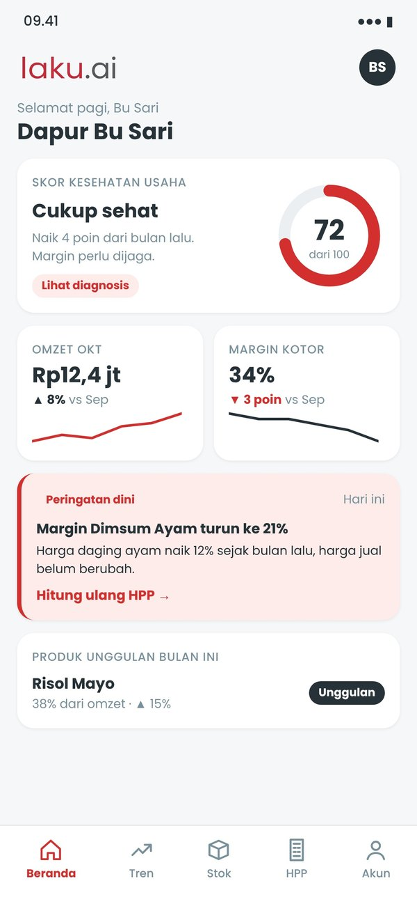
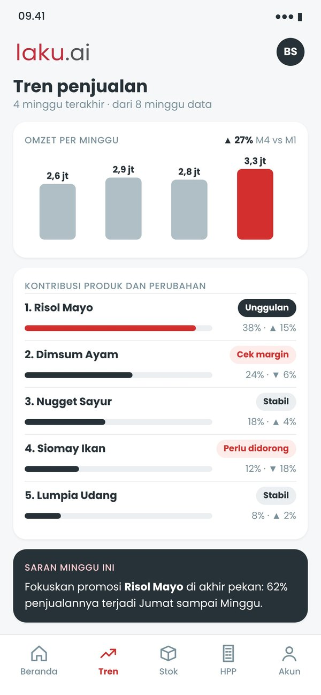
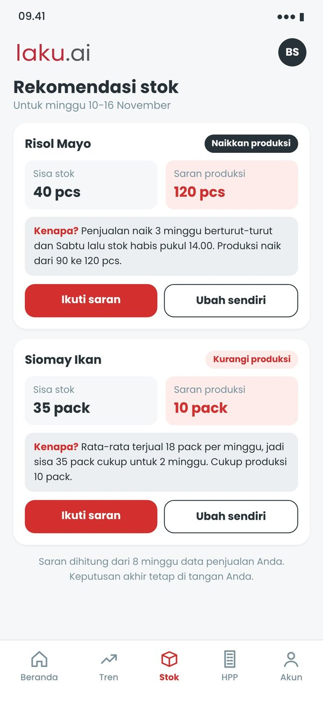
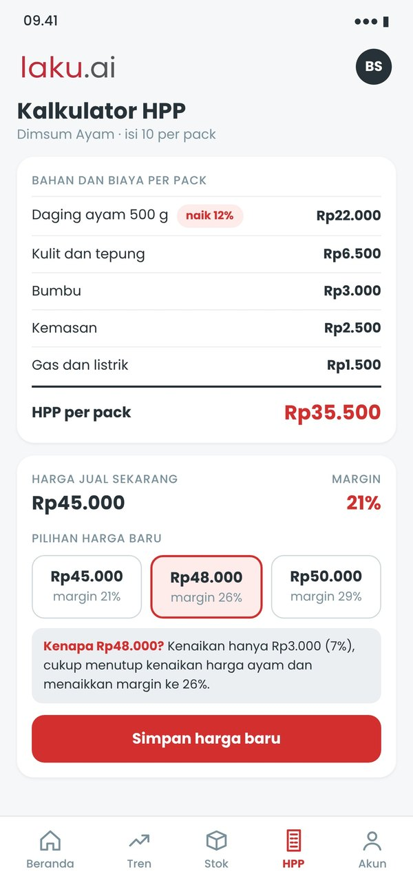
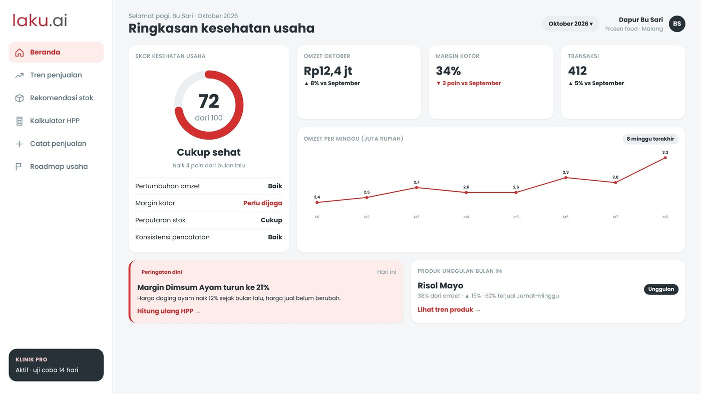
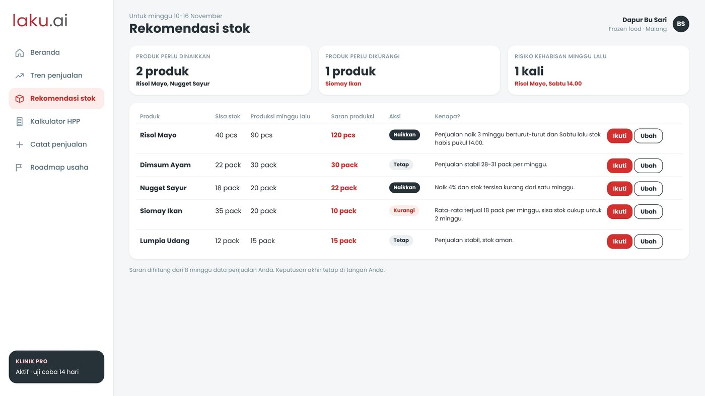
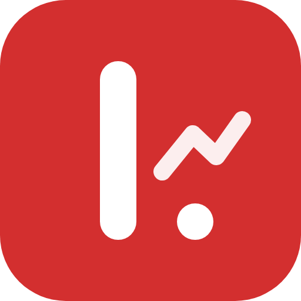

Kalkulator HPP
Hitung HPP dan pilihan harga jual dengan margin yang jelas.
Gratislaku.ai adalah klinik bisnis berbasis AI untuk pemilik UMKM. Aplikasi Android dan web yang mengubah catatan penjualan menjadi diagnosis kesehatan usaha dan saran langkah berikutnya.
Untuk usaha mikro kuliner · gratis untuk fitur dasar, Pro Rp49.000/bulan

Survei pilot laku.ai, 30 Okt – 4 Nov 2026, 19 responden valid dari 23 respons. Hasilnya menunjukkan arah, bukan gambaran nasional.
Foto nota, isi cepat, atau impor dari aplikasi kasir dan GoFood/Shopee.
Skor kesehatan usaha, tren omzet, margin, dan produk unggulan.
Harga jual, jumlah stok, dan promosi, lengkap dengan alasan dan datanya.
Ikuti atau ubah saran. Roadmap 3-12 bulan untuk tahap lanjut.
Fitur inti dibangun lebih dulu karena paling diminati. Cabang dan franchise menyusul sebagai modul lanjut.
Hitung HPP dan pilihan harga jual dengan margin yang jelas.
GratisSkor usaha, tren omzet dan margin, peringatan dini.
ProProduk unggulan dan saran produksi per produk, selalu dengan alasan.
ProRencana 3-12 bulan dan kesiapan buka cabang atau franchise.
Modul lanjut




Harga awal untuk diuji di beta. Rentang yang diterima responden survei sekitar Rp50.500 sampai Rp75.000.
Hambatan terbesar bukan harga, tapi kepercayaan. Karena itu setiap saran laku.ai disertai alasan dan data, dan tidak ada yang dijalankan otomatis.
laku.ai bisa dipasang seperti aplikasi biasa, tanpa toko aplikasi.
